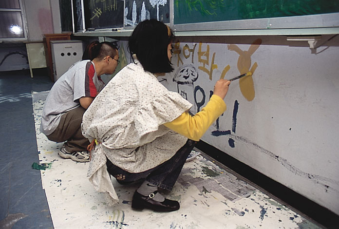
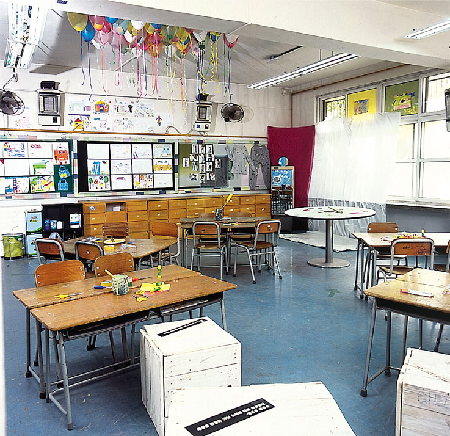
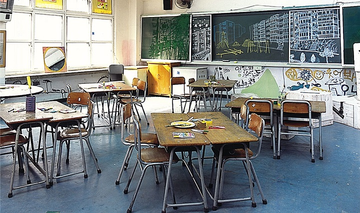

|
* 송전초등학교
놀자~
설치 장소 1 / 송전초등학교 교실
설치 장소 2 / 스톤 엔 워터


놀이의 사전적 의미는 그것 자체로서 흥미가 있는 것을 스스로 느끼는 활동의 총칭이다. 인간의 본능적인 놀이욕구 이외에도 개인적, 사회적으로 받는 제반 갈등과 스트레스는 놀이를 필요로 하게 되었다.
따라서 우리는 단순히 놀이하는 행위자체보다는 그런 행위를 통해서 우리가 의도하는 나와 너‘가 아닌 우리?의 모습에 조금 다가가려 하는 것이다.
설치 1 : 송전초등학교 교실에 초등학생들(장애인학생 포함)을 초대하여 여러 가지의 놀이 프로그램들을 진행한다. 수업이 아닌 즐기고 서로 웃을 수 있는 시간이 될 수 있도록 한다.
설치 2 : 설치 1에서의 진행되고있는 놀이 사진들을 며칠 단위로 스톤 엔 워터에 재현된 아파트 벽에 사진을 붙여놓는다.

|
|
권진수, 서보람, 서민찬, 이지혜, 변형경, 김사랑, 하선미, 박지은, 어수한
|